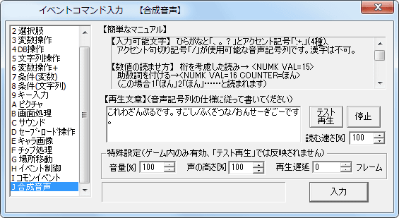

イベントコマンド 【合成音声】
AquesTalkを使用して、合成音声を再生します。

※このコマンドを使用する時は、Aquest社が配布している「AquesTalk.dll(ゲーム内での再生に必要)」および「AquesTalkDa.dll(エディターでのプレビューに必要)」をGame.exeと同じ場所に置いてください。
「AquesTalk.dll」を置くと、エディターにイベントコマンドのタブが出現します。
※また、合成音声を使用したゲームを配布する際は、利用規約により、ライセンス内容を示したテキストファイル「AqLisence.txt」をGame.exeと同じ場所に同梱する必要があります。
「AqLisence.txt」は、DLLファイルのデータに同梱されています。
サンプル音声→AquesTalk公式(外部リンク)
DLLのダウンロード→AquesTalk公式ダウンロードページ(外部リンク)
(ページ下部の「ダウンロード」から、「AquesTalk 拡張機能ライブラリ」をダウンロードすることを推奨します。
その中には4種類の声色のDLLがあるので、好きなDLLを選んでGame.exeの場所に置いてください)
※合成音声は、再生後はSEと同じ扱いになるので、「サウンド」のSE停止によって再生を止めることができます。
【各機能の説明】
・再生文章
ここに再生したい文章を入力します。音声記号列の仕様に従った文字以外を入力すると再生されません。上部の簡単なマニュアルおよび、AquesTalk公式で閲覧できる音声記号列仕様のマニュアルを参照してください。
・テスト再生
入力した文章をテスト再生します。
・停止
テスト再生を停止します。
・読む速さ[%]
読む速さを指定します。値を大きくすると速くなります。
・音量[%]/声の高さ[%]
ゲームでの再生時に音量と声の高さ(周波数)を変えることができます。
・再生遅延
指定したフレーム後に再生します